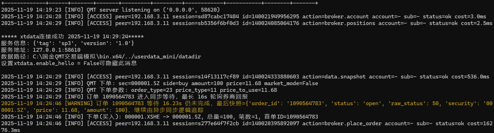
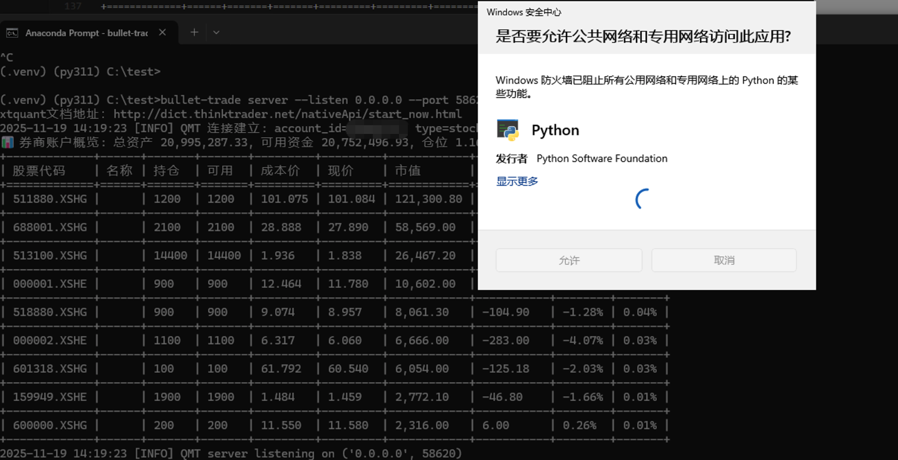
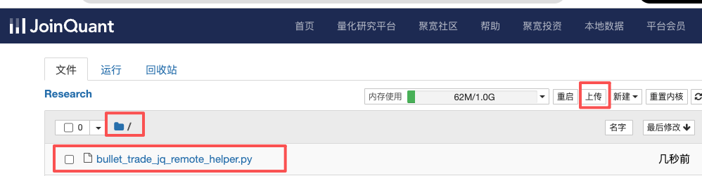
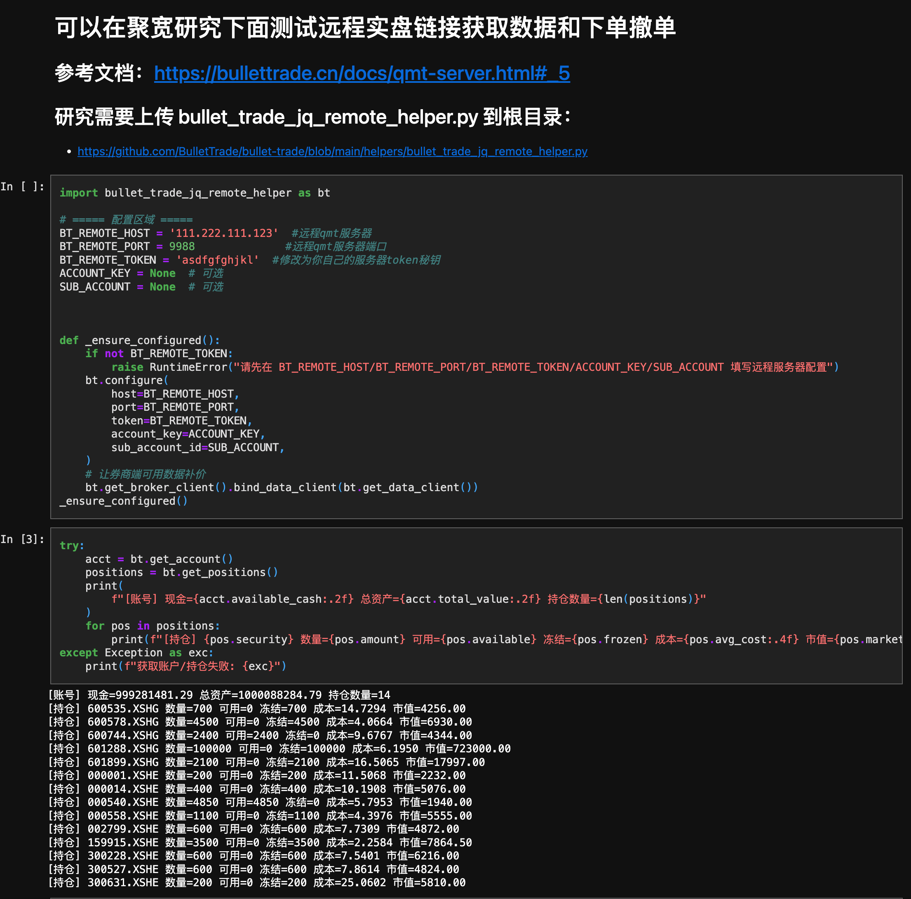
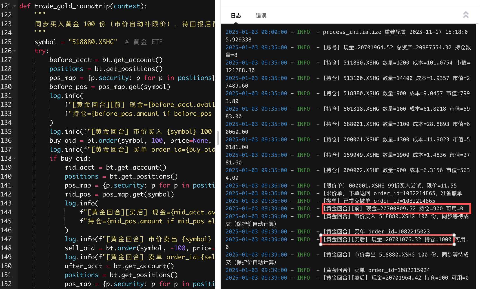

方案 B：策略在聚宽侧模拟盘运行¶
这一条路的意思是：
- 策略逻辑继续放在聚宽侧跑
- 聚宽负责选股、择时和生成买卖动作
- BulletTrade 负责把这些动作转发到本地或云端 Windows QMT / MiniQMT 机器执行
本页默认用 MiniQMT/xtquant 启动远程 bullet-trade server。如果券商不再提供 MiniQMT，也可以先按 大 QMT 服务向导 在大 QMT 里启动 helper，再启动 bullet-trade server --server-type big_qmt；聚宽侧 helper 仍然连接同一个 58620 qmt server。
新手先按这条链路理解：
聚宽模拟盘策略 -> bullet_trade_jq_remote_helper.py -> bullet-trade server -> QMT / MiniQMT / 大 QMT -> 券商
这里最容易弄错的是网络方向：
不是 QMT 主动连聚宽，而是聚宽侧 helper 主动访问你的 bullet-trade server。
所以只要策略继续在聚宽侧运行，不管后面选择哪种策略修改方案，聚宽都必须能访问 bullet-trade server 的地址和端口。
这条路线适合：
- 复杂策略现在就在聚宽侧跑
- 你短期目标是先接通实盘，不是先把策略全部本地化
- 策略依赖聚宽侧研究环境、平台权限表、复杂选股或财务链路
- 你暂时判断不清哪些函数兼容、哪些函数不兼容
总流程图¶
flowchart TD
A["购买 Windows 云服务器"] --> B["安装 QMT"]
B --> C["选择独立交易启动 QMT"]
C --> D["安装 Python 环境"]
D --> E["安装带 qmt 扩展的 BulletTrade"]
E --> F["配置 .env"]
F --> G["启动 bullet-trade server"]
G --> H["研究里上传 helper 和测试 notebook"]
H --> I["在聚宽研究里做远程调试"]
I --> J["修改聚宽模拟策略"]
J --> K["选择策略修改方案 1 或 2"]
K --> L["在聚宽模拟环境运行策略"]第一章：准备 Windows 云服务器和 QMT / MiniQMT¶
这台 Windows 机器可以是：
- 你自己的 Windows 电脑
- Windows 云服务器
如果你打算长期远程跑，建议直接用 Windows 云服务器。
例如：
- 阿里云 Windows 云服务器
- 腾讯云 Windows 云服务器
新手起步时，服务器一般用 2C 4G、3M 带宽、带独立公网 IP 就够了。
常见活动价通常在几十元到两百元一年这个区间，具体还是以各家云厂商当期活动页为准。
在这台机器上，你要先完成 3 件事：
- 安装 QMT
- 启动支持 MiniQMT 的 QMT 环境
- 登录 QMT 账号
如果使用大 QMT，不需要 userdata_mini 和 xtquant 本地数据目录这条配置链路；需要在大 QMT 里新建并运行 helper 策略，具体见 大 QMT 服务向导。
MiniQMT 和大 QMT 的 Windows 侧启动方式不同，但聚宽侧看到的入口应保持一致：
| Windows 侧后端 | Windows 侧做什么 | 聚宽侧连接什么 |
|---|---|---|
| MiniQMT / xtquant | 配 QMT_DATA_PATH，启动 bullet-trade server |
bullet-trade server 的 58620 |
| 大 QMT helper | 先在大 QMT 里运行 helper，再启动 bullet-trade server --server-type big_qmt |
仍然是 bullet-trade server 的 58620 |
大 QMT helper 的内部端口，例如 9000，不要给聚宽直接连。
建议的基础准备¶
- 已按 环境准备：先安装 Python，再创建虚拟环境 完成 Python 安装
- 已安装并登录的 QMT，并且该环境支持 MiniQMT
- 一台可以运行 QMT / MiniQMT 的 Windows 机器
- 如果要远程连这台机器，还要能配置防火墙和公网访问
这里有两个关键要求：
- 后面的本地取数和远程 server 都默认你能访问
userdata_mini - 登录时请选择 独立交易 方式启动 QMT
可以参考下面这两张图：


到这一步，你的目标只有一个：先让 QMT 在这台 Windows 机器上稳定登录。
第二章：安装 Python 和 BulletTrade¶
如果这台机器还没有 Python，先完成：
这台机器要直接连接本地 QMT，并且要启动 bullet-trade server，所以建议直接安装带 QMT 扩展的版本：
pip install "bullet-trade[qmt]"
如果你还不知道 .env 是什么，或者不知道怎么在 Windows 里创建这个文件，先看：
第三章：配置并启动远程 bullet-trade server¶
下面是 MiniQMT/xtquant 后端的配置。大 QMT 后端不要写 QMT_DATA_PATH，请按 大 QMT 服务向导 使用 BIG_QMT_GATEWAY_URL 和 --server-type big_qmt。
先准备 .env 文件。
下面这个代码块不是命令，而是要写进 .env 文件里的内容：
QMT_DATA_PATH=C:\QMT\userdata_mini
QMT_ACCOUNT_ID=123456
QMT_SERVER_TOKEN=secret
然后启动：
bullet-trade --env-file .env server --listen 0.0.0.0 --port 58620 --enable-data --enable-broker
请注意：
- 不要写
--data-path - 账号、数据目录、token 都放在
.env
启动成功后，你应该能看到服务监听日志。

第四章：放通端口，确认外网能访问¶
如果你用的是 Windows 云服务器，到这一步必须确认端口已经放通。
这里通常要同时检查两层：
- 云平台安全组 / 防火墙
- Windows 自带防火墙
云平台要放通什么¶
对新手来说，最小要求就是：
- 放通入站
TCP - 端口
58620
如果你用的是：
- 阿里云：到云服务器对应的安全组里放通
58620/TCP - 腾讯云：到云服务器对应的安全组或轻量服务器防火墙里放通
58620/TCP
Windows 本机也要放通¶
如果 Windows 第一次启动 bullet-trade server 时弹出了防火墙提示，要允许放行。
如果没有弹窗，就手动到 Windows Defender 防火墙里检查这台机器是否已经允许该端口或该程序。

怎么测试端口通不通¶
先在 Windows 云服务器本机检查服务有没有监听：
netstat -ano | findstr 58620
如果你看到 0.0.0.0:58620 或对应端口的监听信息，说明服务已经在本机起来了。
然后在你自己的另一台机器上测试公网端口是否能打通。
Windows PowerShell 可以用：
Test-NetConnection your.server.ip -Port 58620
macOS / Linux 可以用：
nc -vz your.server.ip 58620
如果测试通过，通常会看到：
TcpTestSucceeded : True- 或者
succeeded
如果本机测试通、外网测试不通，优先看安全组、防火墙、端口映射。
如果外网端口通，但聚宽 helper 仍连不上，优先检查 host、port、token 是否和服务端一致。
第五章：把 helper 和测试 notebook 上传到聚宽研究根目录¶
如果你前面是在 Windows 云服务器上启动了 QMT 和 bullet-trade server，到这里就先不要动云服务器那边了。
保持：
- QMT 已按独立交易方式登录
bullet-trade server正在运行
然后切到聚宽侧继续下面的联调。
仓库里已经提供了现成文件：
helpers/bullet_trade_jq_remote_helper.py下载链接：bullet_trade_jq_remote_helper.pyhelpers/jq_remote_strategy_example.py下载链接：jq_remote_strategy_example.pybullet_trade/notebook/04.joinquant_remote_live_trade.ipynb下载链接：04.joinquant_remote_live_trade.ipynb
这里要分清楚两个位置：
- 聚宽研究根目录：上传
bullet_trade_jq_remote_helper.py和04.joinquant_remote_live_trade.ipynb - 聚宽策略：
jq_remote_strategy_example.py不需要上传到研究里，它是“策略怎么修改”的参考文件，应该放到聚宽策略里参考或对照修改
建议上传到 聚宽研究根目录 的文件只有：
bullet_trade_jq_remote_helper.py04.joinquant_remote_live_trade.ipynb
上传位置尽量就是研究根目录，不要先放到别的子目录。
这样后面在聚宽里直接写：
import bullet_trade_jq_remote_helper as bt
就能直接找到文件。

第六章：先在聚宽研究 / Jupyter 里做一次远程调试¶
这里说的调试，是在 聚宽自己的研究环境 / Jupyter 页面 里做。
不是在我们本地再开一个 bullet-trade lab。
你可以用两种方式：
- 或者直接打开刚上传的
04.joinquant_remote_live_trade.ipynb，在聚宽研究 / Jupyter 里测试 helper - 或者在聚宽研究 / Jupyter 里新建一个测试文件，把下面这段代码粘进去
如果你是第一次联调，优先建议直接用这个 notebook。
它更适合做“先连通、先查账户、先查持仓”的最小验证。
先做最小检查：
import bullet_trade_jq_remote_helper as bt
bt.configure(
host="your.server.ip",
port=58620,
token="secret",
debug=True,
)
acct = bt.get_account()
positions = bt.get_positions()
print("可用资金:", acct.available_cash)
print("总资产:", acct.total_value)
print("持仓数量:", len(positions))
你第一次联调时，重点看两个地方：
- 聚宽研究 / Jupyter 页面里，是否已经成功打印出账户和持仓
- Windows 云服务器上的
bullet-trade server日志里，是否已经出现新的连接和访问日志
如果聚宽这边运行了代码，但云服务器上完全没有新日志，优先怀疑：
- 公网 IP 写错
- 端口没放通
- token 不一致
- 云服务器安全组或 Windows 防火墙没放行

第七章：选择聚宽侧策略修改方案¶
把聚宽策略接到 BulletTrade，有两种策略修改方案。这里说的是“策略代码怎么改”，不是网络怎么接入；不管选哪种，聚宽侧都要能访问同一个 bullet-trade server。
| 策略修改方案 | 文档 | 特点 |
|---|---|---|
| 策略修改方案 1：显式调用 helper | 策略修改方案 1：显式调用 helper | 下单处改成 bt.order(...)、bt.order_target_value(...)，行为清楚，改动较多 |
| 策略修改方案 2：接管聚宽函数 | 策略修改方案 2：接管聚宽函数 | 在 process_initialize 安装兼容层，原策略的 order(...)、context.portfolio 尽量不改 |
建议：
- 第一次联调先用策略修改方案 1 在聚宽研究里查通账户和持仓。
- 正式迁移存量聚宽模拟盘策略，优先看策略修改方案 2。
- 如果策略只有一两个下单点，并且不依赖聚宽虚拟盘的现金和持仓判断，策略修改方案 1 也可以长期使用。
更完整的优缺点对比见 聚宽策略修改方案对比。
下面保留的是策略修改方案 1 的手动替换说明；如果你采用策略修改方案 2，直接看 策略修改方案 2：接管聚宽函数。
策略修改方案 1：显式调用 helper 的改法¶
很多用户卡在这里。
核心原则其实很简单：
- 选股和信号逻辑尽量不动
- 真正的买卖动作改成调用 helper
如果你不知道策略文件该怎么改，可以把下面这个参考文件上传到 聚宽策略 里，对照着改你自己的策略：
1. 文件头上要加什么¶
这里建议你把文档理解成：
保留你原来策略文件顶部的平台导入和原有逻辑，只新增 helper 相关代码。
你需要新增的是：
import bullet_trade_jq_remote_helper as bt
如果你原来的策略文件已经能在平台侧正常运行，这里不要先去大改原来的导入。
2. 远程服务器参数放在哪里¶
建议直接写在策略文件开头，先用最直白的方式跑通：
BT_REMOTE_HOST = "your.server.ip"
BT_REMOTE_PORT = 58620
BT_REMOTE_TOKEN = "secret"
3. 初始化时要加什么¶
聚宽环境会重启、刷新代码，所以更稳的写法是：
在 process_initialize 里做 bt.configure(...)。
最小写法：
import bullet_trade_jq_remote_helper as bt
BT_REMOTE_HOST = "your.server.ip"
BT_REMOTE_PORT = 58620
BT_REMOTE_TOKEN = "secret"
def process_initialize(context):
bt.configure(
host=BT_REMOTE_HOST,
port=BT_REMOTE_PORT,
token=BT_REMOTE_TOKEN,
)
def initialize(context):
set_benchmark("000300.XSHG")
4. 买卖的时候改哪些函数¶
最常见就是把聚宽原来的下单函数，替换成 helper 对应函数。
常见替换关系：
order(...)改成bt.order(...)order_value(...)改成bt.order_value(...)order_target(...)改成bt.order_target(...)order_target_value(...)改成bt.order_target_value(...)
例如，原来你可能是：
order("000001.XSHE", 100)
order_target_value("510300.XSHG", 100000)
改成：
bt.order("000001.XSHE", 100)
bt.order_target_value("510300.XSHG", 100000)
5. 第一次联调时怎么改最稳¶
不要一上来就把整个复杂策略全量改掉。
更稳的顺序是：
- 先只加
import bullet_trade_jq_remote_helper as bt - 再加
process_initialize里的bt.configure(...) - 先用
bt.get_account()、bt.get_positions()验证连通 - 最后只替换一两个下单函数做最小测试
第八章：先用最小策略测试，再切回正式策略¶
建议不要第一枪就直接改你最复杂的正式策略。
先在聚宽里做一个最小联通测试，例如：
import bullet_trade_jq_remote_helper as bt
def process_initialize(context):
bt.configure(
host="your.server.ip",
port=58620,
token="secret",
)
def initialize(context):
set_benchmark("000300.XSHG")
run_daily(test_remote_trade, time="09:35")
def test_remote_trade(context):
acct = bt.get_account()
positions = bt.get_positions()
log.info(f"[账号] 现金={acct.available_cash:.2f} 总资产={acct.total_value:.2f}")
log.info(f"[持仓数] {len(positions)}")
# 第一次联调时，建议先只查账户与持仓
# 确认通了以后，再把下面这行打开做小额测试
# bt.order("000001.XSHE", 100, price=None, wait_timeout=10)
第一轮联调，建议顺序一定要这样：
- 先
bt.get_account() - 再
bt.get_positions() - 最后才
bt.order(...)
不要第一枪就直接下单。
第九章：在聚宽模拟环境运行策略¶
当你已经在聚宽研究 / Jupyter 里验证通过，再把同样的改法带回聚宽模拟环境。
这时候你的重点是同时观察两个地方：
- 聚宽模拟日志
- Windows 上的
bullet-trade server日志
至少要满足下面这些条件，才算这条路线已经跑通：
- 聚宽研究 / Jupyter 里能完成最小远程调试
- 聚宽模拟里能正常执行 helper
- 能查到账户和持仓
- 能发出一笔测试单
- Windows 端能看到 server 收到请求并转发给 QMT
- QMT 侧能看到对应委托
聚宽侧日志示意：

最小验收标准¶
建议按下面顺序验收，不要跳步：
| 阶段 | 通过标准 |
|---|---|
| Windows/QMT | QMT 已登录，bullet-trade server 正在监听 58620 |
| 网络 | 聚宽研究环境能访问 server，服务端日志能看到请求 |
| 认证 | token 正确，不返回鉴权错误 |
| 账户 | bt.get_account() 能返回真实账户资金 |
| 持仓 | bt.get_positions() 能返回真实持仓 |
| 策略修改 | 已选择策略修改方案 1 或 2，并只改必要下单/账户入口 |
| 测试单 | 小金额或仿真测试单能在 QMT 侧看到委托 |
常见报错与排查¶
1. 简单策略能买卖，复杂策略没有信号¶
优先排查这 5 件事：
- 复杂策略的选股链路是不是根本没有迁移完整
- 是否依赖财务面、平台权限数据或聚宽侧研究环境
- 执行侧查询到的行情口径是否与你策略判断时使用的口径不同
- 调度时间是不是变了，导致条件判断时点不对
- 当天是否本来就没有满足条件的信号
建议做法：
- 先打印候选股票池
- 再打印每个过滤条件剩下多少标的
- 再打印最终买卖条件是否成立
不要只盯着“为什么没有下单”，更要看“为什么没有信号”。
2. 聚宽连不上本地或云端 server¶
优先排查：
host和port是否写对QMT_SERVER_TOKEN是否一致- 服务端是否真的监听在
0.0.0.0 - Windows 防火墙是否放行
- 云服务器安全组是否放行端口
3. 能查持仓，但下单失败¶
优先排查：
- QMT 是否已登录
- 账户是否可交易
- 标的是否停牌或不在交易时段
- 可用资金或可卖数量是否不足
- 价格保护或最小委托单位是否触发限制